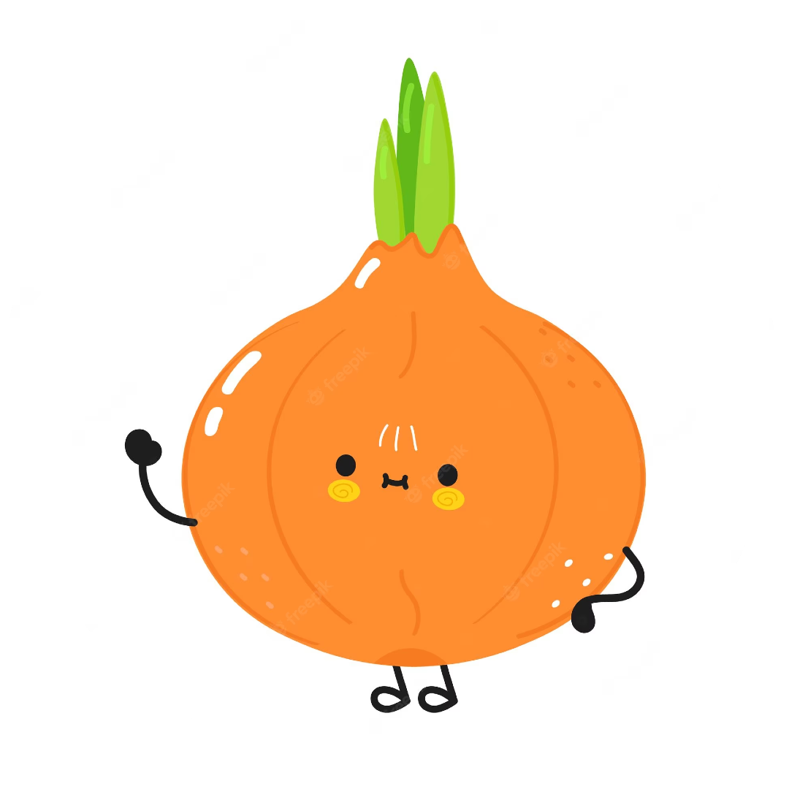
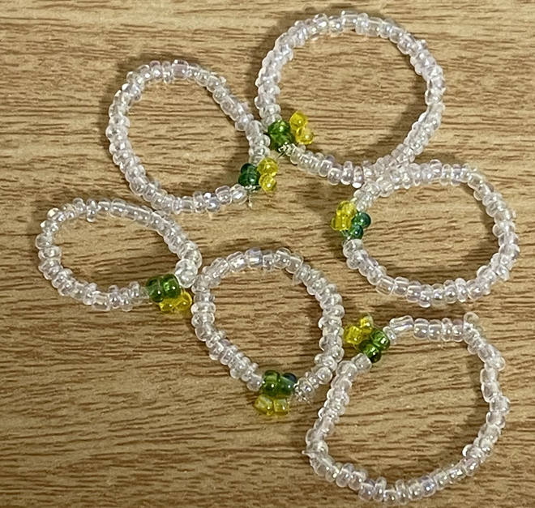

최서연
2021-----
- 성장 과정
- 장점
- 문제를 끝까지 해결하려는 태도
- 도전하려는 마음가짐
- 단점
- 확신을 가지기 어려워함
- 한 가지 일에 집중하면 다른 일에 소홀해짐
- 취미
- 독서
- 게임
- 비즈공예

- 가치관
- 삶의 모든 과정은 선택의 연속이다.
- 경험의 폭이 넓어질수록 사람의 그릇은 커진다.
- 자신을 속이지 말라.
- 대학 생활의 목표
- 내가 하고 싶은 일이 무엇인지 명확히 정하기
- 관심과는 분야와 관련된 프로젝트 진행하기
- 이루고 싶은 것
- 다른 사람을 돕는 사람이 되기
- 내 흥미와 맞는 직업 가지기
- 국내 시/도마다 한 곳씩 여행 가보기